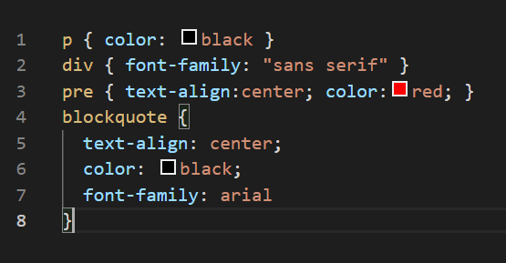

CSS adalah kepanjangaan dari Cascading Style Sheets yang berguna untuk menyederhanakan proses pembuatan website dengan mengatur elemen yang tertulis di bahasa markup. CSS dipakai untuk mendesain halaman depan atau tampilan website (front end). CSS menangani tampilan dan ‘rasa’ dari halaman website.
Ketika menggunakan CSS, Anda dapat mengatur warna teks, jenis font, baris antar paragraf, ukuran kolom, dan jenis background yang dipakai. Tidak hanya itu CSS juga bisa untuk mendesain layout, variasi tampilan di berbagai perangkat yang berbeda, dan berbagai efek yang dipakai di dalam website.CSS sangat mudah dipelajari, tapi juga powerful karena dapat mengontrol penyajian tampilan dari dokumen HTML. Mulai dari yang simpel sampai kompleks. Tidak heran jika saat ini CSS hampir dipakai di berbagai website untuk dikombinasikan dengan HTML maupun PHP.
CSS pertama kali bermula sejak munculnya SGML pada tahun 1970an. Sejak kemunculannya tersebut, CSS mengalami perkembangan yang sangat pesat. Format dasar CSS yang banyak kita gunakan sekarang ini merupakan ide dari seoang programmer bernama Hakon Wium Lie yang tertuang dalam proposalnya mengenai Cascading HTML Style Sheet (CHSS) pada bulan Oktober 1994 (dalam konferensi W3C di Chicago, Illinois). Kemudian, beliau bersama-sama dengan seorang temannya yang bernama Bert Bos mengembangkan suatu standard CSS.
Pada akhir tahun 1996, CSS telah resmi dipublikasikan (dan menyusul kemudian CSS Level 1 pada bulan Desember). Pengerjaan proyek ini juga didukung oleh seorang programmer bernama Thomas Reardon dari perusahaan software ternama, Microsoft. CSS digunakan oleh penulis maupun pembaca halaman web untuk menentukan warna, jenis huruf, tata letak, dan berbagai aspek tampilan dokumen. CSS digunakan terutama untuk memisahkan antara isi dokumen (yang ditulis dengan HTML atau bahasa markup lainnya) dengan presentasi dokumen (yang ditulis dengan CSS).
Pemisahan ini dapat meningkatkan aksesibilitas isi, memberikan lebih banyak keleluasaan dan kontrol terhadap tampilan, dan mengurangi kompleksitas serta pengulangan pada stuktur isi. CSS memungkinkan halaman yang sama untuk ditampilkan dengan cara yang berbeda untuk metode presentasi yang berbeda, seperti melalui layar, cetak, suara (sewaktu dibacakan oleh browser basis-suara atau pembaca layar), dan juga alat pembaca braille. Halaman HTML atau XML yang sama juga dapat ditampilkan secara berbeda, baik dari segi gaya tampilan atau skema warna dengan menggunakan CSS.
Sintaks CSS terdiri dari tiga bagian: pemilih atau selektor (selector), sifat atau properti (property), dan nilai (value). “Selektor” biasanya adalah elemen atau tag HTML yang akan didefinisikan, “properti” adalah atribut yang akan diganti dengan “nilai” tertentu. Properti dan nilai dipisahkan dengan tanda titik dua (:) dan keduanya diapit oleh tanda kurung kurawal ({).
Jika suatu nilai mengandung spasi, nilai tersebut harus diapit dengan tanda petik ("). Untuk memberikan lebih dari satu properti bagi suatu selektor, pisahkan setiap kombinasi “properti:nilai” dengan tanda titik koma (;). Untuk membuat definisi gaya lebih mudah dibaca, definisi tiap properti dapat dilakukan per baris.
contohnya:
